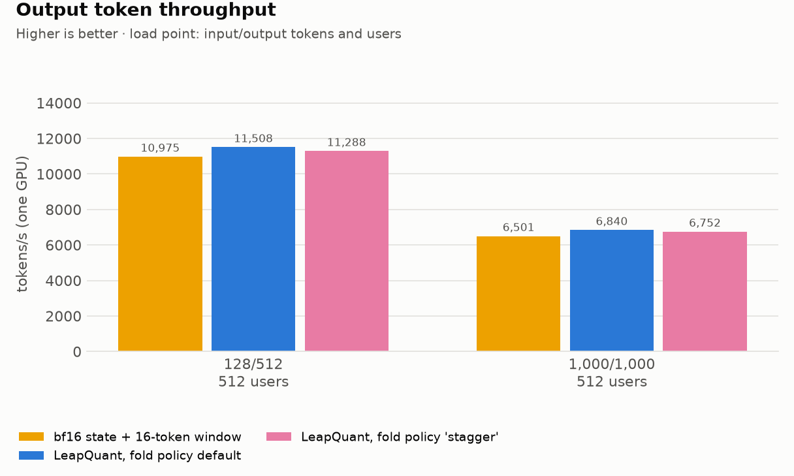
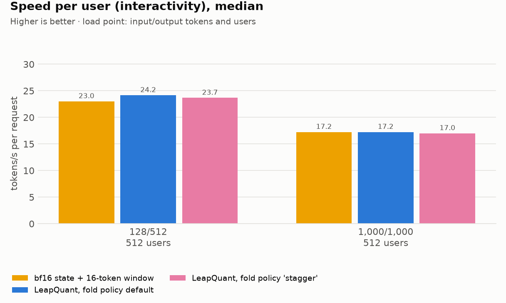
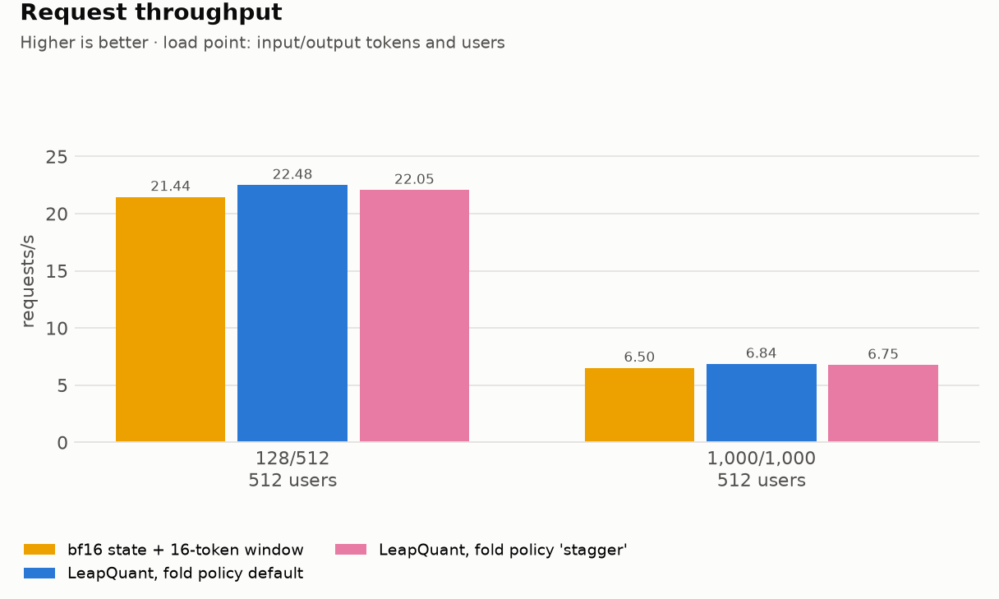
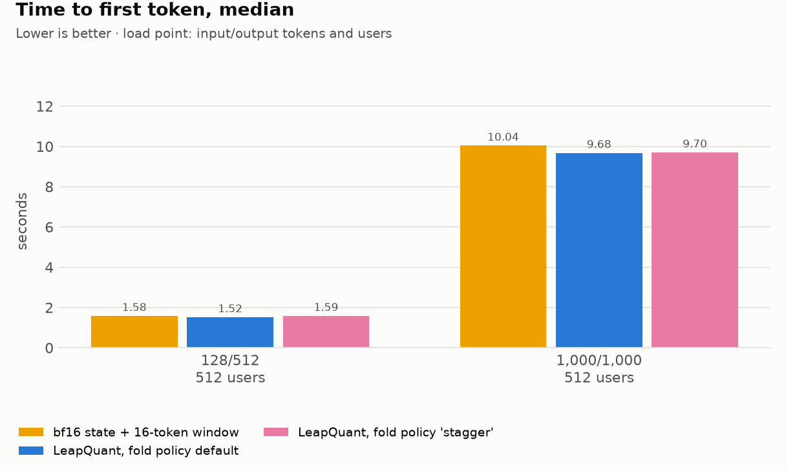
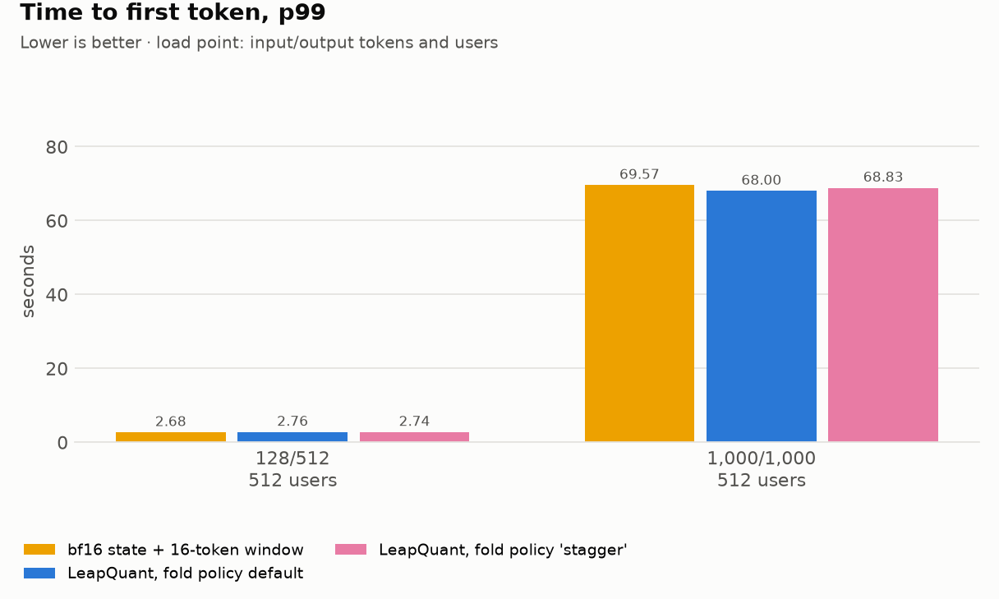
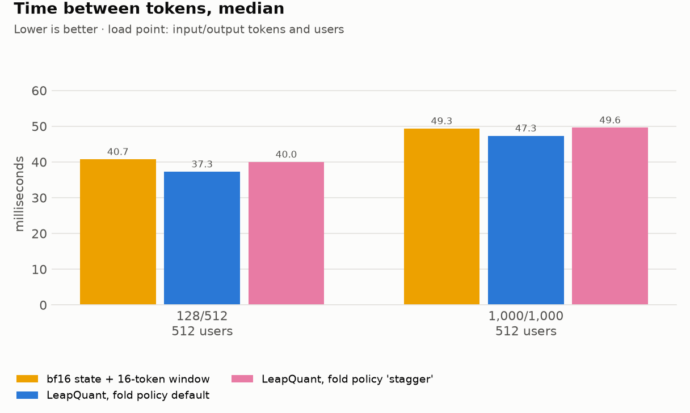
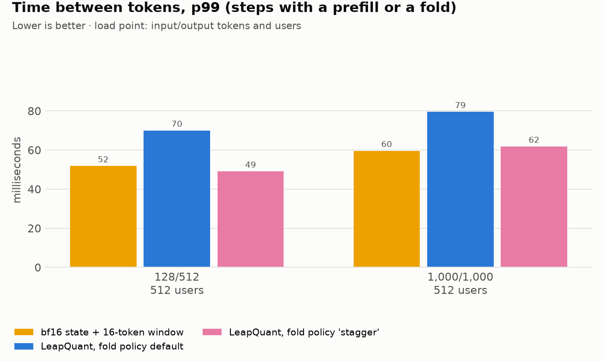
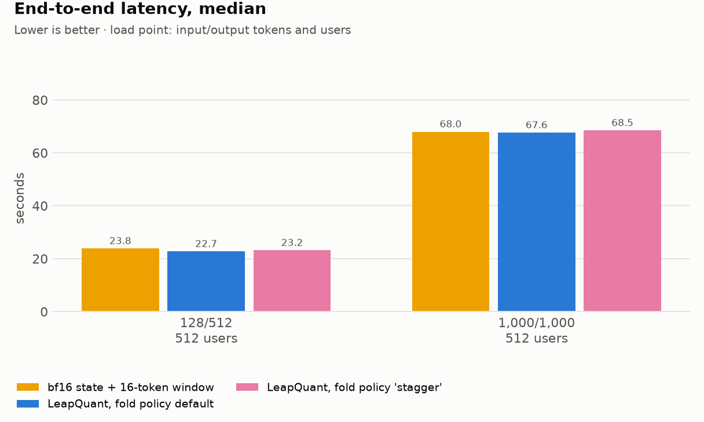
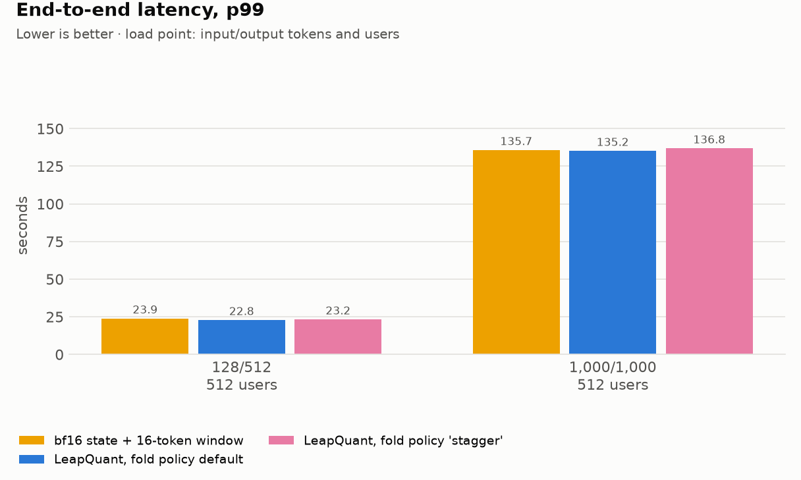
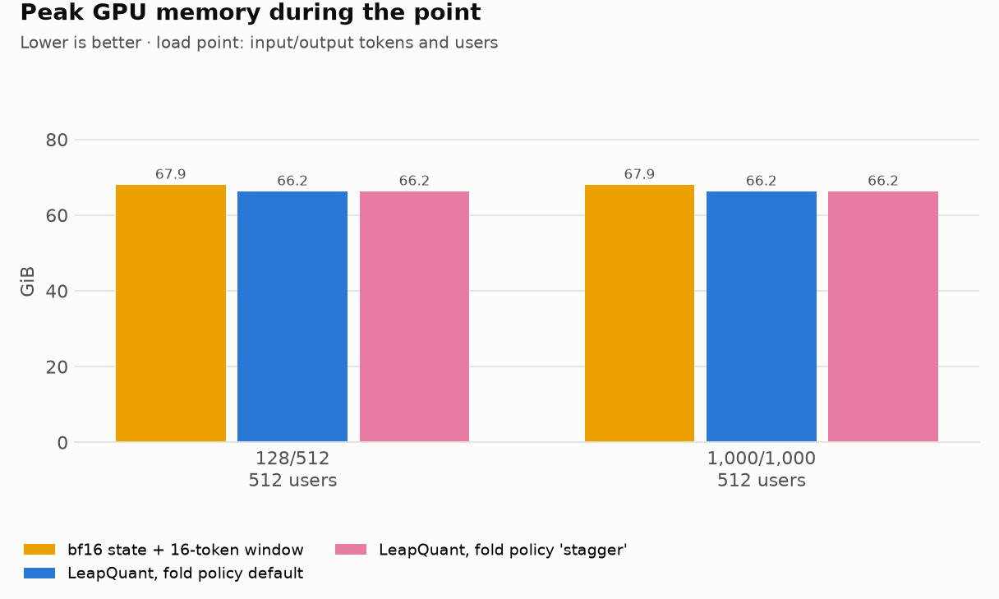

Serving: throughput, latency, speed per user
Qwen/Qwen3.5-9B on NVIDIA H100 PCIe (81,559 MiB, driver 580.196.07), SGLang c8ea707971 with 9 changed files. 3 servers, 2 load points. Baseline for the ratios: bf16 state + 16-token window (ratio = server ÷ baseline: above 1 is better for throughput and speed, below 1 for times and memory).
Every load point at a glance
The numbers public benchmarks lead with. Means over the repetitions where a point was run more than once (each repetition is in the full table at the end).
| Load point | Server | Output tokens/s | ÷ baseline | Speed per user, tokens/s | TTFT median, s | TTFT p99, s | TPOT median, ms | ITL p99, ms | E2E median, s | E2E p99, s | Peak GPU memory, GiB |
|---|---|---|---|---|---|---|---|---|---|---|---|
| 128/512 · 512 users | bf16 state + 16-token window | 10,975 | 23.0 | 1.58 | 2.68 | 43.5 | 52 | 23.8 | 23.9 | 67.9 | |
| 128/512 · 512 users | LeapQuant, fold policy default | 11,508 | 1.049 | 24.2 | 1.52 | 2.76 | 41.4 | 70 | 22.7 | 22.8 | 66.2 |
| 128/512 · 512 users | LeapQuant, fold policy 'stagger' | 11,288 | 1.029 | 23.7 | 1.59 | 2.74 | 42.2 | 49 | 23.2 | 23.2 | 66.2 |
| 1,000/1,000 · 512 users | bf16 state + 16-token window | 6,501 | 17.2 | 10.04 | 69.57 | 58.0 | 60 | 68.0 | 135.7 | 67.9 | |
| 1,000/1,000 · 512 users | LeapQuant, fold policy default | 6,840 | 1.052 | 17.2 | 9.68 | 68.00 | 58.0 | 79 | 67.6 | 135.2 | 66.2 |
| 1,000/1,000 · 512 users | LeapQuant, fold policy 'stagger' | 6,752 | 1.039 | 17.0 | 9.70 | 68.83 | 58.8 | 62 | 68.5 | 136.8 | 66.2 |
Charts
Output token throughput

| Load point | bf16 state + 16-token window | LeapQuant, fold policy default | LeapQuant, fold policy 'stagger' |
|---|---|---|---|
| 128/512 · 512 users | 10,975 | 11,508 | 11,288 |
| 1,000/1,000 · 512 users | 6,501 | 6,840 | 6,752 |
Speed per user (interactivity), median

| Load point | bf16 state + 16-token window | LeapQuant, fold policy default | LeapQuant, fold policy 'stagger' |
|---|---|---|---|
| 128/512 · 512 users | 23.0 | 24.2 | 23.7 |
| 1,000/1,000 · 512 users | 17.2 | 17.2 | 17.0 |
Request throughput

| Load point | bf16 state + 16-token window | LeapQuant, fold policy default | LeapQuant, fold policy 'stagger' |
|---|---|---|---|
| 128/512 · 512 users | 21.44 | 22.48 | 22.05 |
| 1,000/1,000 · 512 users | 6.50 | 6.84 | 6.75 |
Time to first token, median

| Load point | bf16 state + 16-token window | LeapQuant, fold policy default | LeapQuant, fold policy 'stagger' |
|---|---|---|---|
| 128/512 · 512 users | 1.58 | 1.52 | 1.59 |
| 1,000/1,000 · 512 users | 10.04 | 9.68 | 9.70 |
Time to first token, p99

| Load point | bf16 state + 16-token window | LeapQuant, fold policy default | LeapQuant, fold policy 'stagger' |
|---|---|---|---|
| 128/512 · 512 users | 2.68 | 2.76 | 2.74 |
| 1,000/1,000 · 512 users | 69.57 | 68.00 | 68.83 |
Time between tokens, median

| Load point | bf16 state + 16-token window | LeapQuant, fold policy default | LeapQuant, fold policy 'stagger' |
|---|---|---|---|
| 128/512 · 512 users | 40.7 | 37.3 | 40.0 |
| 1,000/1,000 · 512 users | 49.3 | 47.3 | 49.6 |
Time between tokens, p99 (steps with a prefill or a fold)

| Load point | bf16 state + 16-token window | LeapQuant, fold policy default | LeapQuant, fold policy 'stagger' |
|---|---|---|---|
| 128/512 · 512 users | 52 | 70 | 49 |
| 1,000/1,000 · 512 users | 60 | 79 | 62 |
End-to-end latency, median

| Load point | bf16 state + 16-token window | LeapQuant, fold policy default | LeapQuant, fold policy 'stagger' |
|---|---|---|---|
| 128/512 · 512 users | 23.8 | 22.7 | 23.2 |
| 1,000/1,000 · 512 users | 68.0 | 67.6 | 68.5 |
End-to-end latency, p99

| Load point | bf16 state + 16-token window | LeapQuant, fold policy default | LeapQuant, fold policy 'stagger' |
|---|---|---|---|
| 128/512 · 512 users | 23.9 | 22.8 | 23.2 |
| 1,000/1,000 · 512 users | 135.7 | 135.2 | 136.8 |
Peak GPU memory during the point

| Load point | bf16 state + 16-token window | LeapQuant, fold policy default | LeapQuant, fold policy 'stagger' |
|---|---|---|---|
| 128/512 · 512 users | 67.9 | 66.2 | 66.2 |
| 1,000/1,000 · 512 users | 67.9 | 66.2 | 66.2 |
Every metric, per load point
All the numbers the benchmark client reports, grouped as public benchmark reports group them, with the ratio to the baseline.
128 in / 512 out, exact lengths · 512 users
| Metric | bf16 state + 16-token window | LeapQuant, fold policy default | LeapQuant, fold policy 'stagger' | LeapQuant, fold policy default ÷ bf16 state + 16-token window | LeapQuant, fold policy 'stagger' ÷ bf16 state + 16-token window |
|---|---|---|---|---|---|
| Throughput (one GPU: also the figure per GPU) | |||||
| Output token throughput (tok/s) | 10,975 | 11,508 | 11,288 | 1.049 | 1.029 |
| Total token throughput (tok/s) | 13,719 | 14,385 | 14,110 | 1.049 | 1.029 |
| Input token throughput (tok/s) | 2,744 | 2,877 | 2,822 | 1.049 | 1.029 |
| Request throughput (req/s) | 21.44 | 22.48 | 22.05 | 1.049 | 1.028 |
| Peak output token throughput (tok/s) | 13,312 | 14,336 | 13,894 | 1.077 | 1.044 |
| Speed per user (interactivity) | |||||
| Speed per user, median (tok/s) | 23.0 | 24.2 | 23.7 | 1.050 | 1.029 |
| Speed per user, 90% of requests at least (tok/s) | 21.9 | 23.1 | 22.7 | 1.054 | 1.034 |
| Speed per user, 99% of requests at least (tok/s) | 21.8 | 22.7 | 22.2 | 1.039 | 1.018 |
| Time to first token | |||||
| Mean TTFT (ms) | 1,498 | 1,550 | 1,546 | 1.035 | 1.032 |
| Median TTFT (ms) | 1,584 | 1,518 | 1,586 | 0.958 | 1.001 |
| P90 TTFT (ms) | 2,497 | 2,470 | 2,559 | 0.989 | 1.025 |
| P95 TTFT (ms) | 2,603 | 2,578 | 2,564 | 0.990 | 0.985 |
| P99 TTFT (ms) | 2,678 | 2,760 | 2,741 | 1.031 | 1.024 |
| Time per output token (after the first) | |||||
| Mean TPOT (ms) | 43.7 | 41.4 | 42.3 | 0.948 | 0.968 |
| Median TPOT (ms) | 43.5 | 41.4 | 42.2 | 0.953 | 0.972 |
| P90 TPOT (ms) | 45.6 | 43.3 | 44.1 | 0.948 | 0.967 |
| P95 TPOT (ms) | 45.8 | 43.6 | 44.6 | 0.950 | 0.974 |
| P99 TPOT (ms) | 45.9 | 44.1 | 45.0 | 0.963 | 0.982 |
| Time between tokens | |||||
| Mean ITL (ms) | 43.7 | 41.4 | 42.3 | 0.948 | 0.968 |
| Median ITL (ms) | 40.7 | 37.3 | 40.0 | 0.915 | 0.982 |
| P90 ITL (ms) | 43.8 | 40.6 | 41.7 | 0.927 | 0.952 |
| P95 ITL (ms) | 48.6 | 65.3 | 42.3 | 1.344 | 0.871 |
| P99 ITL (ms) | 51.8 | 69.9 | 49.0 | 1.351 | 0.947 |
| Max ITL (ms) | 2,570 | 2,672 | 2,678 | 1.040 | 1.042 |
| End-to-end latency | |||||
| Mean E2E Latency (ms) | 23,809 | 22,702 | 23,144 | 0.953 | 0.972 |
| Median E2E Latency (ms) | 23,815 | 22,724 | 23,151 | 0.954 | 0.972 |
| P90 E2E Latency (ms) | 23,848 | 22,782 | 23,191 | 0.955 | 0.972 |
| P95 E2E Latency (ms) | 23,855 | 22,795 | 23,198 | 0.956 | 0.972 |
| P99 E2E Latency (ms) | 23,864 | 22,797 | 23,212 | 0.955 | 0.973 |
| Load, requests, tokens, memory | |||||
| Max request concurrency | 512 | 512 | 512 | ||
| Concurrency | 510.37 | 510.24 | 510.28 | ||
| Peak concurrent requests | 1,006 | 1,001 | 1,024 | ||
| Successful requests | 1,024 | 1,024 | 1,024 | ||
| Benchmark duration (s) | 47.8 | 45.6 | 46.4 | 0.954 | 0.972 |
| Total input tokens | 131,072 | 131,072 | 131,072 | ||
| Total generated tokens | 524,288 | 524,288 | 524,288 | ||
| Peak GPU memory (MiB) | 69,528 | 67,772 | 67,786 | 0.975 | 0.975 |
| Client settings | |||||
| Prompts | 1024 | 1024 | 1024 | ||
| Input / output tokens | 128 / 512 exact | 128 / 512 exact | 128 / 512 exact | ||
| Arrival rate, requests/s | inf | inf | inf | ||
| Client concurrency limit | 512 | 512 | 512 | ||
| Output length forced (ignore EOS) | yes | yes | yes | ||
| Warm-up requests | 3 | 3 | 3 | ||
| Cache flushed before the point | yes | yes | yes | ||
| Temperature | 0.0 | 0.0 | 0.0 | ||
| Seed | 42 | 42 | 42 | ||
| Goodput SLO | - | - | - | ||
| Repetitions | 1 | 1 | 1 |
1,000 in / 1,000 out, exact (Artificial Analysis's system load test shape) · 512 users
| Metric | bf16 state + 16-token window | LeapQuant, fold policy default | LeapQuant, fold policy 'stagger' | LeapQuant, fold policy default ÷ bf16 state + 16-token window | LeapQuant, fold policy 'stagger' ÷ bf16 state + 16-token window |
|---|---|---|---|---|---|
| Throughput (one GPU: also the figure per GPU) | |||||
| Output token throughput (tok/s) | 6,501 | 6,840 | 6,752 | 1.052 | 1.039 |
| Total token throughput (tok/s) | 13,002 | 13,679 | 13,504 | 1.052 | 1.039 |
| Input token throughput (tok/s) | 6,501 | 6,840 | 6,752 | 1.052 | 1.039 |
| Request throughput (req/s) | 6.50 | 6.84 | 6.75 | 1.052 | 1.038 |
| Peak output token throughput (tok/s) | 10,233 | 11,297 | 11,082 | 1.104 | 1.083 |
| Speed per user (interactivity) | |||||
| Speed per user, median (tok/s) | 17.2 | 17.2 | 17.0 | 1.000 | 0.986 |
| Speed per user, 90% of requests at least (tok/s) | 15.2 | 15.2 | 15.1 | 1.003 | 0.991 |
| Speed per user, 99% of requests at least (tok/s) | 14.8 | 14.9 | 14.7 | 1.004 | 0.991 |
| Time to first token | |||||
| Mean TTFT (ms) | 14,886 | 11,186 | 11,224 | 0.751 | 0.754 |
| Median TTFT (ms) | 10,038 | 9,679 | 9,701 | 0.964 | 0.966 |
| P90 TTFT (ms) | 17,878 | 17,365 | 17,384 | 0.971 | 0.972 |
| P95 TTFT (ms) | 68,708 | 18,279 | 18,298 | 0.266 | 0.266 |
| P99 TTFT (ms) | 69,568 | 67,996 | 68,834 | 0.977 | 0.989 |
| Time per output token (after the first) | |||||
| Mean TPOT (ms) | 55.2 | 56.9 | 57.7 | 1.031 | 1.045 |
| Median TPOT (ms) | 58.0 | 58.0 | 58.8 | 1.000 | 1.014 |
| P90 TPOT (ms) | 65.8 | 65.6 | 66.4 | 0.997 | 1.010 |
| P95 TPOT (ms) | 66.8 | 66.5 | 67.3 | 0.997 | 1.009 |
| P99 TPOT (ms) | 67.4 | 67.2 | 68.0 | 0.996 | 1.009 |
| Time between tokens | |||||
| Mean ITL (ms) | 55.2 | 56.9 | 57.7 | 1.031 | 1.045 |
| Median ITL (ms) | 49.3 | 47.3 | 49.6 | 0.959 | 1.005 |
| P90 ITL (ms) | 53.5 | 51.8 | 53.6 | 0.969 | 1.003 |
| P95 ITL (ms) | 54.6 | 73.2 | 54.2 | 1.339 | 0.993 |
| P99 ITL (ms) | 59.5 | 79.5 | 61.7 | 1.334 | 1.037 |
| Max ITL (ms) | 17,753 | 18,420 | 18,424 | 1.038 | 1.038 |
| End-to-end latency | |||||
| Mean E2E Latency (ms) | 70,047 | 68,050 | 68,898 | 0.971 | 0.984 |
| Median E2E Latency (ms) | 67,963 | 67,629 | 68,463 | 0.995 | 1.007 |
| P90 E2E Latency (ms) | 68,230 | 67,711 | 68,543 | 0.992 | 1.005 |
| P95 E2E Latency (ms) | 89,406 | 67,723 | 68,554 | 0.757 | 0.767 |
| P99 E2E Latency (ms) | 135,705 | 135,166 | 136,845 | 0.996 | 1.008 |
| Load, requests, tokens, memory | |||||
| Max request concurrency | 512 | 512 | 512 | ||
| Concurrency | 455.39 | 465.43 | 465.20 | ||
| Peak concurrent requests | 728 | 1,009 | 1,009 | ||
| Successful requests | 1,024 | 1,024 | 1,024 | ||
| Benchmark duration (s) | 157.5 | 149.7 | 151.7 | 0.951 | 0.963 |
| Total input tokens | 1,024,000 | 1,024,000 | 1,024,000 | ||
| Total generated tokens | 1,024,000 | 1,024,000 | 1,024,000 | ||
| Peak GPU memory (MiB) | 69,528 | 67,772 | 67,786 | 0.975 | 0.975 |
| Client settings | |||||
| Prompts | 1024 | 1024 | 1024 | ||
| Input / output tokens | 1,000 / 1,000 exact | 1,000 / 1,000 exact | 1,000 / 1,000 exact | ||
| Arrival rate, requests/s | inf | inf | inf | ||
| Client concurrency limit | 512 | 512 | 512 | ||
| Output length forced (ignore EOS) | yes | yes | yes | ||
| Warm-up requests | 3 | 3 | 3 | ||
| Cache flushed before the point | yes | yes | yes | ||
| Temperature | 0.0 | 0.0 | 0.0 | ||
| Seed | 42 | 42 | 42 | ||
| Goodput SLO | - | - | - | ||
| Repetitions | 1 | 1 | 1 |
The servers
From each server's log: the state it kept, its pools and its limit on running requests.
| Server | State | Radix cache | State slots | State memory, GB | KV cache, tokens | Max running requests | Log |
|---|---|---|---|---|---|---|---|
| bf16 state + 16-token window | bfloat16 + 16-token window | off | 560 | 13.8 | 926,316 (28.3 GB) | 512 | server_off_bf16_window_r1.log |
| LeapQuant, fold policy default | LeapQuant (compressed) + 16-token window | off | 560 | 11.8 | 993,215 (30.3 GB) | 512 | server_off_lq_policy_default_r1.log |
| LeapQuant, fold policy 'stagger' | LeapQuant (compressed) + 16-token window | off | 560 | 11.8 | 993,215 (30.3 GB) | 512 | server_off_lq_policy_stagger_r1.log |
Full measurements
One row per log (serving_<label>_<shape>_c<users>.log), every metric
| Label | Shape | Users | Output token throughput (tok/s) | Total token throughput (tok/s) | Input token throughput (tok/s) | Request throughput (req/s) | Peak output token throughput (tok/s) | Speed per user, median (tok/s) | Speed per user, 90% of requests at least (tok/s) | Speed per user, 99% of requests at least (tok/s) | Mean TTFT (ms) | Median TTFT (ms) | P90 TTFT (ms) | P95 TTFT (ms) | P99 TTFT (ms) | Mean TPOT (ms) | Median TPOT (ms) | P90 TPOT (ms) | P95 TPOT (ms) | P99 TPOT (ms) | Mean ITL (ms) | Median ITL (ms) | P90 ITL (ms) | P95 ITL (ms) | P99 ITL (ms) | Max ITL (ms) | Mean E2E Latency (ms) | Median E2E Latency (ms) | P90 E2E Latency (ms) | P95 E2E Latency (ms) | P99 E2E Latency (ms) | Max request concurrency | Concurrency | Peak concurrent requests | Successful requests | Benchmark duration (s) | Total input tokens | Total generated tokens | Peak GPU memory (MiB) |
|---|---|---|---|---|---|---|---|---|---|---|---|---|---|---|---|---|---|---|---|---|---|---|---|---|---|---|---|---|---|---|---|---|---|---|---|---|---|---|---|
| off_bf16_window_r1 | aa1k | 512 | 6,501 | 13,002 | 6,501 | 6.50 | 10,233 | 17.2 | 15.2 | 14.8 | 14,886 | 10,038 | 17,878 | 68,708 | 69,568 | 55.2 | 58.0 | 65.8 | 66.8 | 67.4 | 55.2 | 49.3 | 53.5 | 54.6 | 59.5 | 17,753 | 70,047 | 67,963 | 68,230 | 89,406 | 135,705 | 512 | 455.39 | 728 | 1,024 | 157.5 | 1,024,000 | 1,024,000 | 69,528 |
| off_lq_policy_default_r1 | aa1k | 512 | 6,840 | 13,679 | 6,840 | 6.84 | 11,297 | 17.2 | 15.2 | 14.9 | 11,186 | 9,679 | 17,365 | 18,279 | 67,996 | 56.9 | 58.0 | 65.6 | 66.5 | 67.2 | 56.9 | 47.3 | 51.8 | 73.2 | 79.5 | 18,420 | 68,050 | 67,629 | 67,711 | 67,723 | 135,166 | 512 | 465.43 | 1,009 | 1,024 | 149.7 | 1,024,000 | 1,024,000 | 67,772 |
| off_lq_policy_stagger_r1 | aa1k | 512 | 6,752 | 13,504 | 6,752 | 6.75 | 11,082 | 17.0 | 15.1 | 14.7 | 11,224 | 9,701 | 17,384 | 18,298 | 68,834 | 57.7 | 58.8 | 66.4 | 67.3 | 68.0 | 57.7 | 49.6 | 53.6 | 54.2 | 61.7 | 18,424 | 68,898 | 68,463 | 68,543 | 68,554 | 136,845 | 512 | 465.20 | 1,009 | 1,024 | 151.7 | 1,024,000 | 1,024,000 | 67,786 |
| off_bf16_window_r1 | decode | 512 | 10,975 | 13,719 | 2,744 | 21.44 | 13,312 | 23.0 | 21.9 | 21.8 | 1,498 | 1,584 | 2,497 | 2,603 | 2,678 | 43.7 | 43.5 | 45.6 | 45.8 | 45.9 | 43.7 | 40.7 | 43.8 | 48.6 | 51.8 | 2,570 | 23,809 | 23,815 | 23,848 | 23,855 | 23,864 | 512 | 510.37 | 1,006 | 1,024 | 47.8 | 131,072 | 524,288 | 69,528 |
| off_lq_policy_default_r1 | decode | 512 | 11,508 | 14,385 | 2,877 | 22.48 | 14,336 | 24.2 | 23.1 | 22.7 | 1,550 | 1,518 | 2,470 | 2,578 | 2,760 | 41.4 | 41.4 | 43.3 | 43.6 | 44.1 | 41.4 | 37.3 | 40.6 | 65.3 | 69.9 | 2,672 | 22,702 | 22,724 | 22,782 | 22,795 | 22,797 | 512 | 510.24 | 1,001 | 1,024 | 45.6 | 131,072 | 524,288 | 67,772 |
| off_lq_policy_stagger_r1 | decode | 512 | 11,288 | 14,110 | 2,822 | 22.05 | 13,894 | 23.7 | 22.7 | 22.2 | 1,546 | 1,586 | 2,559 | 2,564 | 2,741 | 42.3 | 42.2 | 44.1 | 44.6 | 45.0 | 42.3 | 40.0 | 41.7 | 42.3 | 49.0 | 2,678 | 23,144 | 23,151 | 23,191 | 23,198 | 23,212 | 512 | 510.28 | 1,024 | 1,024 | 46.4 | 131,072 | 524,288 | 67,786 |
Metrics
- Output token throughput, tokens/s: generated tokens per second, all requests together. One GPU, so this is also the figure per GPU that public benchmarks plot.
- Total token throughput: input plus generated tokens per second. Request throughput: completed requests per second. Peak output token throughput: the most tokens generated in any one-second window (the client's count).
- Speed per user (interactivity), tokens/s: 1000 ÷ a request's time per output token. The median, and the speeds that 90% and 99% of requests reach or beat (from the p90 and p99 TPOT).
- TTFT, time to first token: from sending the request to its first token, queueing and prefill included. TPOT, time per output token: a request's generation time after the first token divided by its other tokens. ITL, time between tokens: every gap between two consecutive tokens of a request (its tail shows the steps that carry a prefill or a fold). E2E latency: the whole request. Mean, median, p90, p95, p99 over the requests of the point.
- Concurrency: the average number of requests in flight; Max request concurrency: the client's limit (the users of the point). Peak concurrent requests: the most requests active at some moment of any one-second window, as the client counts it; a request that ends and one that starts within the same second both count, so it can exceed the limit and is not the number running at once. Peak GPU memory: nvidia-smi's peak for the GPU while the point ran (sampled every 0.5 s), the server's preallocated pools included.
Method
Closed loop, as in SemiAnalysis InferenceX and SGLang's own benchmarks: each point keeps a fixed number of requests in flight (the users) with no arrival-rate limit, random prompts (sglang.benchmark.serving --dataset-name random), exact input and output lengths unless the shape says random, three warm-up requests and a cache flush before the point; output lengths are forced (no early stop), so every server generates the same tokens. Open-loop load at fixed arrival rates, where it was run, is in its own section. Every number on this page is parsed from a log named in the tables; nothing is typed in.
What it does not show
Answer quality (see the task accuracy page), other GPUs, and more than one GPU.
Shapes
decode: 128 in / 512 out, exact lengths; aa1k: 1,000 in / 1,000 out, exact (Artificial Analysis's system load test shape).
Generated 2026-11-14 14:44 from results/ab-stagger by reports/generate_reports.py. All reports.